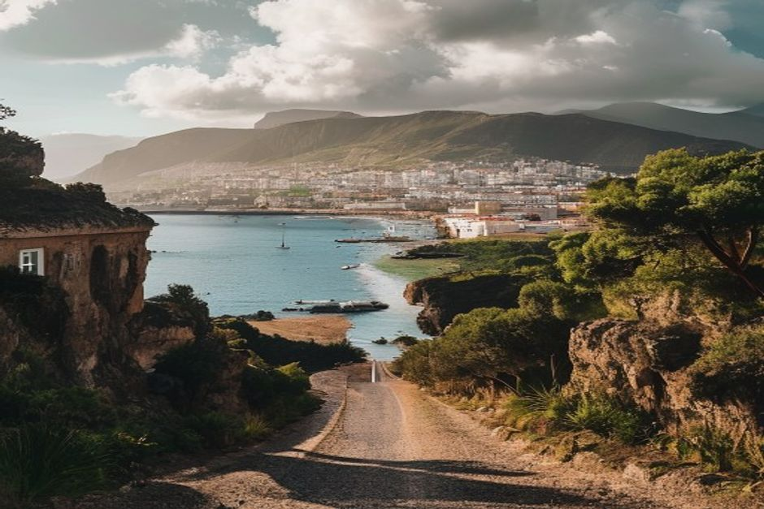
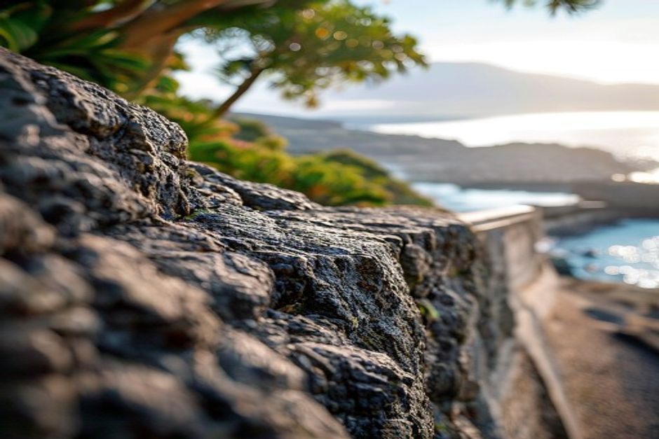

Madeira's paid attractions get most of the attention, but some of the island's best moments — a swim in a volcanic pool, a walk through a working market, a clifftop view with nobody charging admission — don't cost a cent. Here are ten worth building a day around.
1. Swim in Doca do Cavacas' natural pool
Doca do Cavacas is a free volcanic rock pool cut into the cliffs a short walk from Funchal's Lido promenade, refilled by the Atlantic on every tide. There's no entry gate and no ticket booth — just steps down into cold, startlingly clear water framed by black basalt. It's busiest at weekends with locals, which is usually a good sign.

2. Wander the Zona Velha (Funchal's Old Town)
Funchal's Old Town costs nothing to explore and rewards slow walking more than any paid tour would. Narrow cobbled streets between Rua de Santa Maria and the marina are lined with painted doors — a long-running public art project where local artists cover derelict doorways — plus small chapels, street art and tascas serving espetada on bay-laurel skewers.
3. Browse the Mercado dos Lavradores
Funchal's farmers' market is free to enter and one of the best places on the island to see Madeira's produce without buying a thing — stalls piled with custard apples, passion fruit and bananas, a flower hall, and a fish market downstairs where scabbardfish and tuna are sold whole. Go early, before the cruise-ship crowds arrive mid-morning.
4. Watch the sunset from Praia Formosa
Praia Formosa, Funchal's main pebble beach, is free and faces almost due west, making it one of the easiest places on the island to watch the sun drop into the Atlantic without paying for a boat or a rooftop bar. Arrive half an hour before sunset to get a spot on the rocks at either end of the bay, where the crowds thin out fast.
5. Walk out onto the Cabo Girão skywalk
The glass platform built out over Cabo Girão, one of the highest sea cliffs in Europe at around 580 metres, is free to walk onto — you only pay if you drive and need paid parking nearby. It's a genuinely vertiginous five minutes looking straight down at the banana terraces and ocean below. Seeing the same cliff from the water, on a private boat trip past Câmara de Lobos, is the paid alternative view — but the skywalk itself costs nothing.
6. Find a quiet miradouro away from the coach parks
Madeira has dozens of free miradouros (viewpoints), and the best aren't always the famous ones. Miradouro do Pináculo, above Camacha, and Miradouro das Neves, near Monte, both give wide views over Funchal Bay and the mountains without the crowds that gather at Eira do Serrado or the Cabo Girão car park.
7. Follow a stretch of levada for free
Not every levada walk in Madeira requires booking. While the most popular routes — 25 Fontes, Caldeirão Verde — now sit under a paid reservation system through SIMplifica, plenty of shorter, unregulated levada stretches near Ribeiro Frio and Monte remain free and open, following the old irrigation channels through laurel forest.
8. Explore Câmara de Lobos on foot
Câmara de Lobos, the fishing village that Winston Churchill once painted, costs nothing to wander — brightly coloured boats pulled up on black volcanic sand, poncha bars along the front, and a small harbour that still runs on fishing rather than tourism. It's a fifteen-minute drive or a stop on most boat routes heading toward Cabo Girão.
9. Watch the Funchal cable car glide overhead from the gardens below
You don't need to ride the Monte cable car to enjoy it — the Jardim de Santa Catarina and the seafront promenade below give you a free view of the gondolas gliding up the hillside toward Monte, against a backdrop of Funchal Bay. The gardens themselves are free, shaded, and a good rest stop between the Old Town and the marina.

10. Look for wild dolphins from the coast
Madeira's waters host more than two dozen resident and migratory cetacean species, and dolphins occasionally surface close enough to spot from clifftop paths around Ponta do Garajau or the coastal walk near Câmara de Lobos, especially in calmer morning conditions. It's a matter of luck rather than guarantee — a private boat trip out to where the pods actually feed is the reliable way to see them, but the coast path costs nothing to try first.
The free version of Madeira is a real itinerary on its own — the paid experiences just get you closer to the water.
None of this requires a rental car either — most of these are walkable from central Funchal or a short taxi ride away. String together a market morning, an Old Town lunch, and a sunset at Praia Formosa, and you've had a full Madeira day without a single ticket.